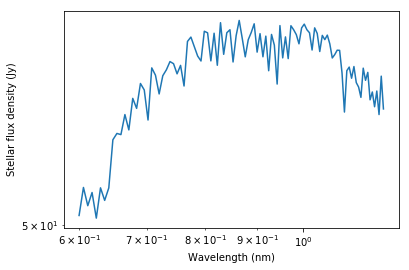
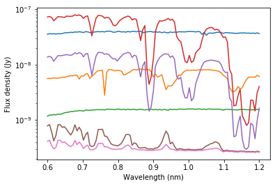

Haystacks processing¶
Load file and dependencies¶
In [1]:
from astropy.io import fits
import numpy as np
# import plotting library & parameters
%pylab inline --no-import-all
import seaborn as sns # plotting package, not necessary for Haystacks
sns.set(font_scale=2)
sns.set_style('whitegrid')
Populating the interactive namespace from numpy and matplotlib
In [2]:
haystacks_file = '/Users/mrizzo/Science/cube_zodi1inc0dist10_0.6um.fits'
haystacks = fits.open(haystacks_file)
The image data is in extension 0¶
In [3]:
cube = haystacks[0].data
cubehdr = haystacks[0].header
cubehdr
Out[3]:
SIMPLE = T / Written by IDL: Thu Apr 6 17:47:42 2017
BITPIX = -64 / Number of bits per data pixel
NAXIS = 3 / Number of data axes
NAXIS1 = 1201 /
NAXIS2 = 1201 /
NAXIS3 = 101 /
EXTEND = T / FITS data may contain extensions
DATE = '2017-04-06' / Creation UTC (CCCC-MM-DD) date of FITS header
SUN = T / Sun in central pixel
LOCAL = T / Local zodiacal background added
COMMENT Spectral image cube of the Solar System.
COMMENT FITS (Flexible Image Transport System) format is defined in 'Astronomy
COMMENT and Astrophysics', volume 376, page 359; bibcode 2001A&A...376..359H
BUNIT = 'Jy ' /Map units per pixel
INC = 0.00000 /System inclination in degrees
ZODI = 1.00000 /Number of zodis
BAND = 2 /Waveband (1, 2 or 3)
SMOOTH = T /Whether to smooth the dustmap or not
GAUSS = 8 /Smoothing kernel size
SRES = 150.000 /Spectral resolution Lam/dlam
G = 0.100000 /H-G scattering phase function asymmetry paramete
DIST = 10.0000 /Distance to the system (pc)
PIXSCALE= 0.100000 /Pixel scale (AU)
EPOCH = 25.7300 /Epoch in years since J2000
Wavelengths are in extension 1¶
In [4]:
wavlist = haystacks[1].data
print (wavlist)
[ 0.60000002 0.60600001 0.61200005 0.61800003 0.62400001 0.63
0.63600004 0.64200002 0.648 0.65400004 0.66000003 0.66600001
0.67200005 0.67800003 0.68400002 0.69000006 0.69600004 0.70200002
0.708 0.71400005 0.72000003 0.72600001 0.73199999 0.73800004
0.74400002 0.75 0.75600004 0.76200002 0.76800001 0.77400005
0.78000003 0.78600001 0.79200006 0.79800004 0.80400002 0.81000006
0.81600004 0.82200003 0.82800001 0.83399999 0.84000003 0.84600002
0.852 0.85800004 0.86400002 0.87 0.87600005 0.88200003
0.88800001 0.89400005 0.90000004 0.90600002 0.91200006 0.91799998
0.92400002 0.93000007 0.93599999 0.94200003 0.94800001 0.954
0.96000004 0.96600002 0.972 0.97800004 0.98400003 0.99000001
0.99600005 1.00200009 1.00800002 1.01400006 1.01999998 1.02600002
1.03200006 1.03799999 1.04400003 1.05000007 1.05599999 1.06200004
1.06800008 1.074 1.08000004 1.08599997 1.09200001 1.09800005
1.10400009 1.11000001 1.11600006 1.12199998 1.12800002 1.13400006
1.1400001 1.14600003 1.15199995 1.15799999 1.16400003 1.17000008
1.176 1.18200004 1.18799996 1.19400001 1.20000005]
Stellar flux is in extension 2¶
In [5]:
stellar = haystacks[2].data
plt.figure(figsize=(12,12))
plt.loglog(wavlist,stellar)
axes = plt.gca()
axes.set_ylim([50,60])
plt.xlabel('Wavelength (um)')
plt.ylabel('Stellar flux density (Jy)')
Out[5]:
<matplotlib.text.Text at 0x158721bd0>

Planet albedos are in extension 3¶
In [6]:
planets = haystacks[3].data
print "Number of planets is: ",planets.shape[0]
plt.figure(figsize=(12,12))
for p in range(planets.shape[0]):
plt.plot(wavlist,planets[p])
plt.xlabel('Wavelength (um)')
plt.ylabel('Geometric albedo')
Number of planets is: 7
Out[6]:
<matplotlib.text.Text at 0x15be00fd0>

Planet parameters are in extension 4¶
In [7]:
params = haystacks[4].data
# lists of parameters for all planets
# parameters are normalized with GM = 4pi**2
radii = params[0,:] # planet radius in AU
a = params[1,:] # semi major axis in AU
ecc = params[2,:] # Eccentricity
inc = params[3,:] # inclination (radians)
longperi = params[4,:] # Longitude of perihelion (radians)
longnode = params[5,:] # Longitude of ascending node (radians)
meanlong = params[6,:] # Mean longitude (radians)
argperi = params[7,:] # Argument of perihelion (radians) (=meanlong-longperi)
periods = params[8,:] # Orbital periods (years) (=a**1.5, where a is in AU; 1AU -> 1 year)
meananom = params[9,:] # Mean anomaly (radians) (=argperi+2*pi*epoch/periods)
X = params[10,:] # X coordinate of planet (in AU in the 3D scene)
Y = params[11,:] # Y coordinate of planet (in AU in the 3D scene)
Z = params[12,:] # Z coordinate of planet (in AU in the 3D scene)
Xpix = params[13,:] # X location in cube (second dimension in Python arrays)
Ypix = params[14,:] # Y location in cube (first dimension in Python arrays)
print("Coordinates of planets")
print(Xpix,Ypix)
Coordinates of planets
(array([ 597., 610., 590., 591., 693., 702., 900.]), array([ 606., 600., 588., 651., 572., 766., 600.]))
Extract planet observed spectra¶
In [8]:
plt.figure(figsize=(12,12))
for p in range(planets.shape[0]):
plt.semilogy(wavlist,cube[:,int(Ypix[p]),int(Xpix[p])])
plt.xlabel('Wavelength (um)')
plt.ylabel('Flux density per pixel (Jy)')
Out[8]:
<matplotlib.text.Text at 0x15c0981d0>
